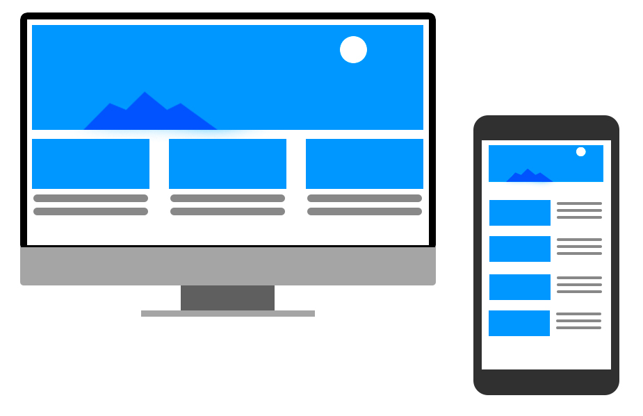
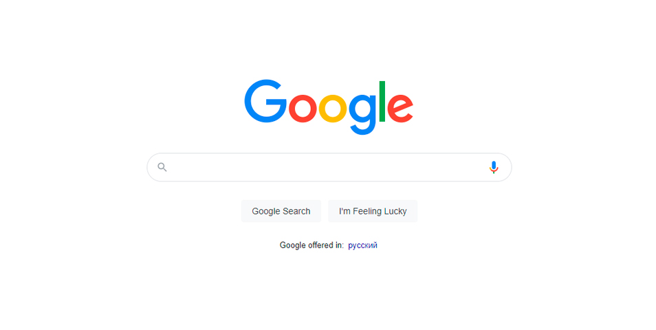
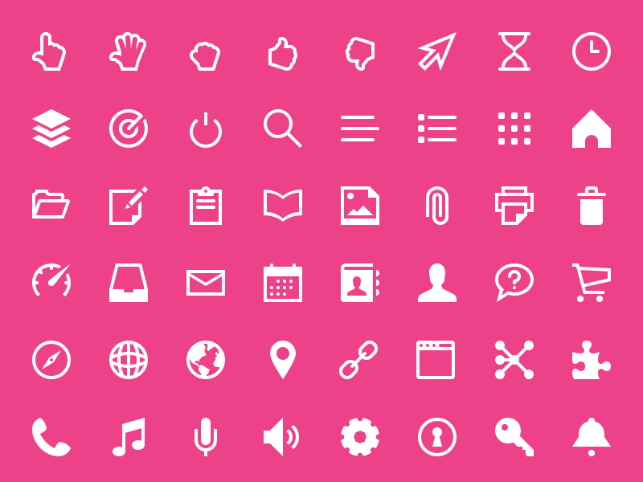
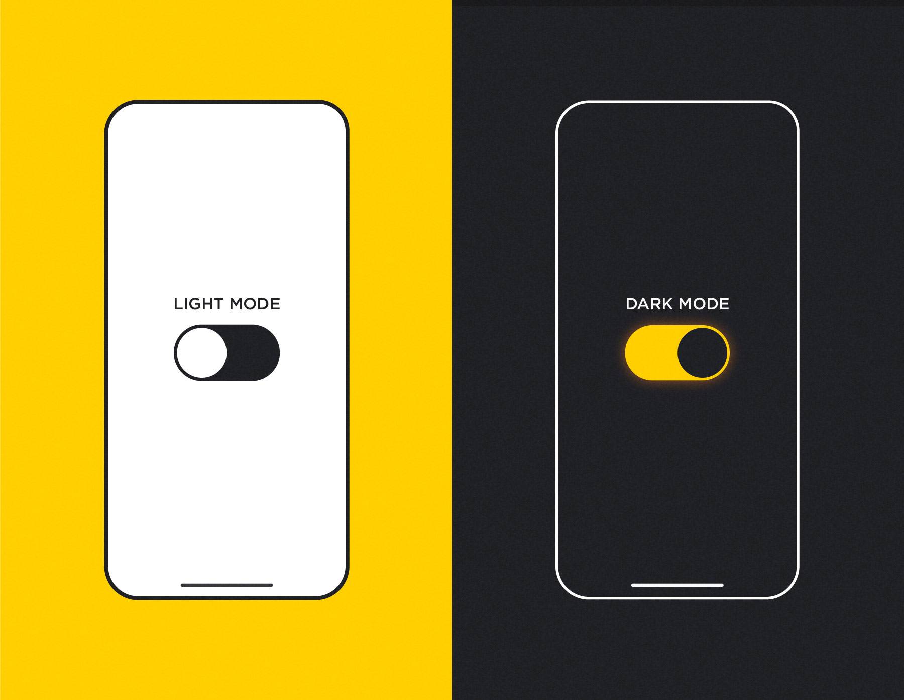
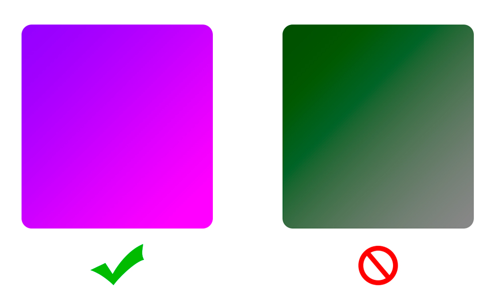

Adaptability
Modern smartphones allow people to use the Internet at any time and visit any site. Therefore, it is important for each site to have a "mobile" version for these gadgets.

Minimalism
Minimalism is the classics of design. Many users appreciate minimalistic geometric shapes, logos, and fonts.

An example of using minimalism in design. Website - Google
Icons
Icons help the user to navigate easily. Moreover, web designers can save space for more important details.

Example of a free icon pack - Touch Icons
Dark Theme
The dark theme trend has become popular recently, which can be explained both by energy saving and health-saving technologies. This trend was supported by the majority of popular companies. Nevertheless, it is not easy to choose good colour shades for a dark theme.

Original image - Article on Habr
Illustrations
Illustrations make the site original and outstanding, turning it into a calling card of any company.

Example of an illustration. Original - unDraw/illustrations
Gradients
Gradients help the site look more volumetric, three-dimensional, "non-flat", but it is important to make the gradient suitable, because you can spoil the perception of the site.

Example of correct and incorrect use of gradients
About
About the author:
Zlobin Artyom Nikolaevich, Artyom Nikolaevich Zlobin , an 8th-grade student, School N 93, Arkhangelsk
About the supervisor:
Arina Alekseevna Lapina, English teacher, School № 93, Arkhangelsk
Used instruments:
- Adobe Photoshop CC 2014
- Sublime Text 3 (+Emmet)
- Google Chrome
Comments